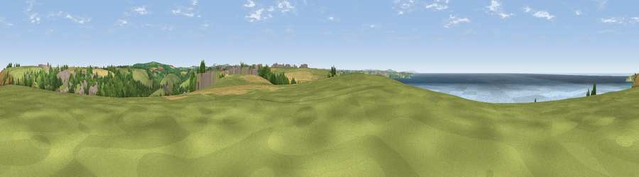

Viewpoint near Mawgan Porth
#5423 in England · top 12% of its area beats it · near Mawgan PorthThe view, rendered

A 360° render of this exact spot computed from the terrain model, tree cover and land cover — summer colours, afternoon light, calibrated against photographs of famous viewpoints. Real trees, hedges and buildings will differ in detail.
The panorama
Grey silhouette: terrain skyline in each direction (720 bearings, Earth curvature and refraction included). Dashed green: skyline with trees (+15 m) and buildings (+8 m) as obstacles. Blue strip: how far the ground is visible on each bearing.
Where the view opens
Wedge length = distance to the farthest visible ground on that bearing (vegetation-aware). Rings at 10, 25 and 50 km.
What fills the view
46% water · 31% grassland · 9% cropland · 9% woodland · 4% built-up
Angular shares of the visible panorama (visual magnitude), not map area. Landscape diversity 0.57 (0–1 Shannon).
Key numbers
More beautiful places nearby
The staircase of upgrades: each row has a higher view potential than everything closer. Driving times are estimates from straight-line distance, calibrated against real road routing — check an actual route before setting out.
| Place | Direction | Drive | Score |
|---|---|---|---|
| Viewpoint near Trenance | N · 2 km | ~4 min | 71.2 |
| Viewpoint near St Eval | ENE · 5 km | ~11 min | 73.2 |
| Viewpoint near St Eval | E · 6 km | ~12 min | 78.3 |
| Penhale Hill | SE · 12 km | ~22 min | 80.3 |
| Viewpoint near Penhale | SE · 13 km | ~24 min | 81.7 |
| Viewpoint near Nanpean | SE · 17 km | ~30 min | 84.2 |
| Viewpoint near Foxhole | SE · 18 km | ~31 min | 86.4 |
| Viewpoint near Stenalees | ESE · 18 km | ~31 min | 88.0 |
50.46192, -5.03698 · source: screening · position refined by local search. Computed location — check access rights before visiting.